Massing: process Seed allocation/initialization
Explanation of allocation/initialization
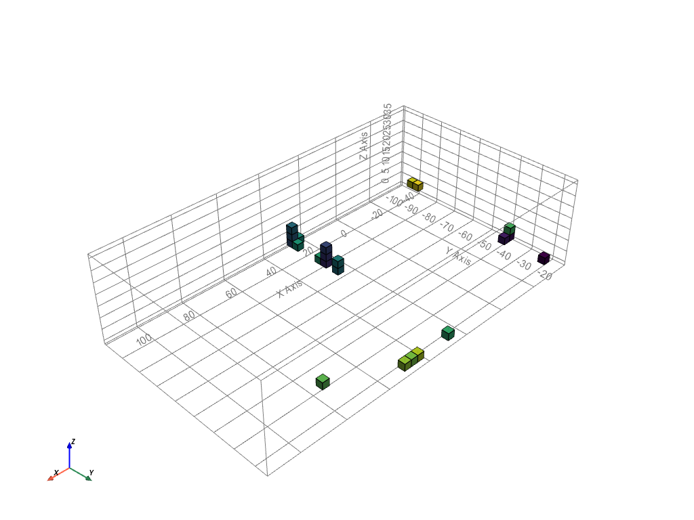
Initialization of the agents
Pseudo code
Initialization_agents.py
Input : voxelized_envelope . csv ( high res ), fields , program of requirement
Initialize the empty occupation lattice ( full of - 1 )
For the agent ids and the agent preferences :
Create a preference lattice for every agent
Raise the value of every field by the weight given in the program
Select the voxel with the highest value
Move the voxel to ground level , to prevent floating parts
Change the value in the occupation and availability lattice
Output : Initialized agents
Evaluate voxel
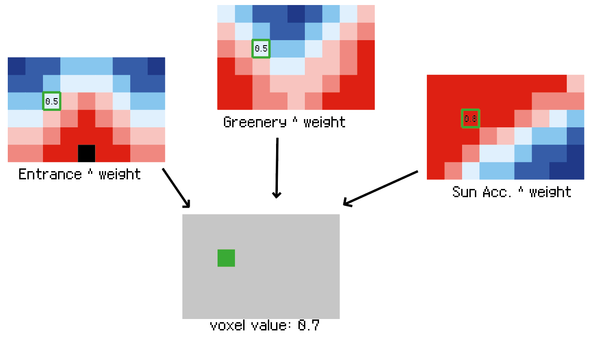
Evaluate voxel
Pseudo code
Evaluate_voxels.py
Input : location of the to be evaluated voxels , fields , preferences
Create a list full of ones with the same length as the amount of voxels to be evaluated
For each agent :
Find the raw value of these voxels in the fields
Raise these values with the weight of each preference
Multiply all the new values with each other to get the final value
Return the final values
Output : new values of evaluated voxels
Change value
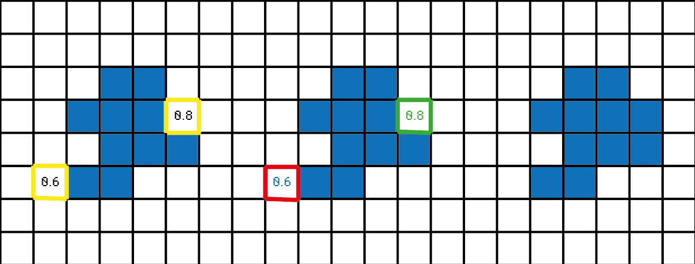
Change value
Beneath is the pseudo code for the change values code. When the agent has grown to its max amount of voxels, the value of the neighbours will be compared with the value of its own voxels. When the neighbour has a value which is 10% higher, it will be occupied and the other voxel will be removed.
Pseudo code
Change_value.py
Input : occupation lattice , availability lattice , location , agent location list , new id
If the voxel needs to get occupied ( new id > - 1 in occupation lattice ):
Add the location to the list of agent locations
Change the value of the availability lattice to occupied ( = 0 )
Else ( voxel needs to be removed ):
Remove the location from the agent locations list
Change the value of the availability lattice to unoccupied ( = 1 )
Change the value of the occupation lattice to the new id
Output : new occupation lattice , new availability lattice , location , agents location list
Updat voxel
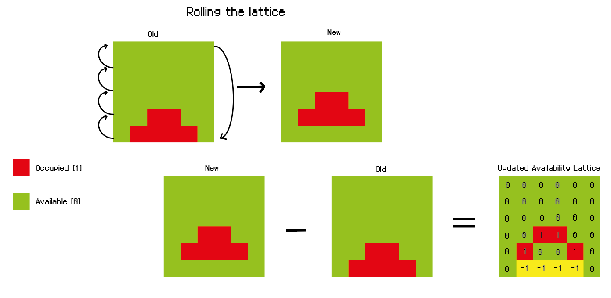
Update availlability lattice
Pseudo code
Update_voxels.py
Input : occupation lattice
Retrieve the location of the occupied voxels ( id > - 1 )
Move the occupied voxels one place up
Subtract the new occupation lattice from the old occupation lattice
Now only the voxels with voxels beneath are available ( id = 1 in avail_lattice )
Set the voxels on ground level which have now the value 0 ( unoccupied ) to 1 so the agent can grow to the sides as well .
Output : new availability lattice
Building depth
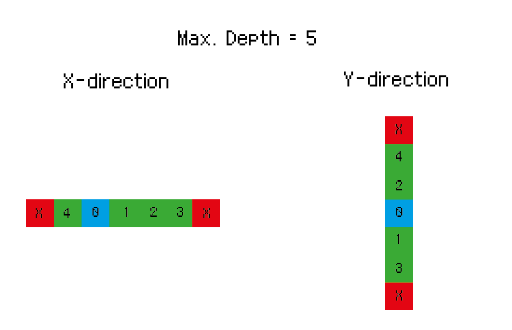
Building depth
Pseudo code
Building_depth.py
Input : occupation lattice , availability lattice , max . building depth
Create stencils to check the different directions
Create conditions for each direction
In the x - direction there can ’ t be more voxels next to each other than the max building depth
In the y - direction there can ’ t be more voxels next to each other than the max building depth
Output : new availability lattice
Final mass
Before choosing a final mass there were four options as we had 2 functions to choose out off. Below are the results of both functions off, float function off, both functions on and finally the final mass that has only the building depth function on and the no float function off.
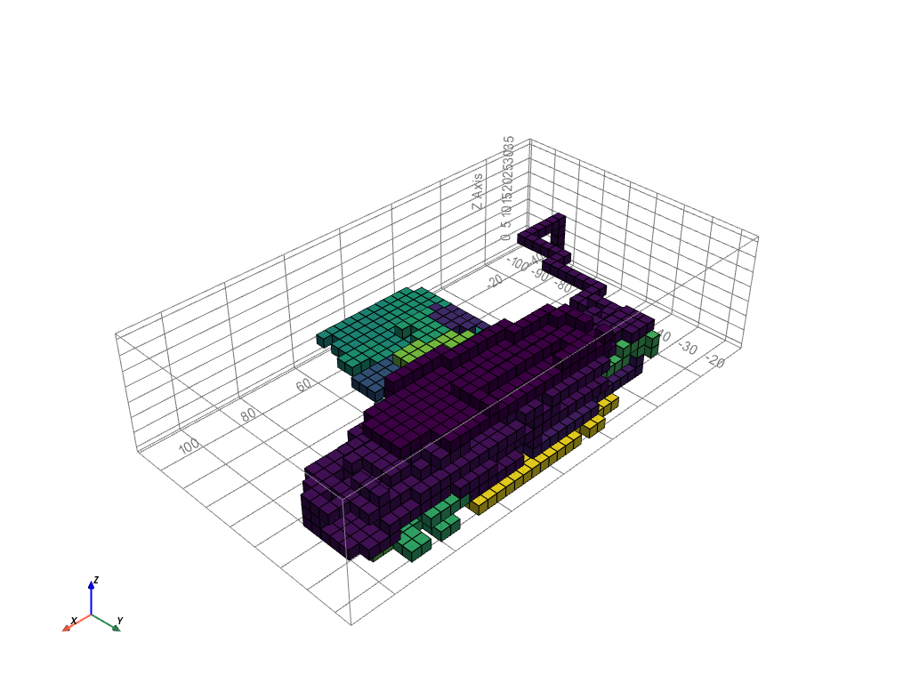
Mass variant, both functions off
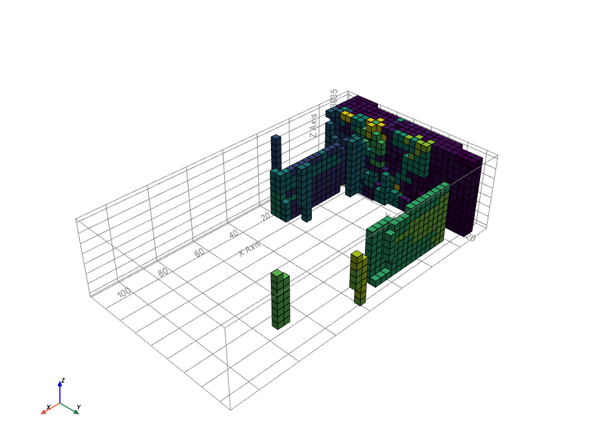
Mass variant, float function on
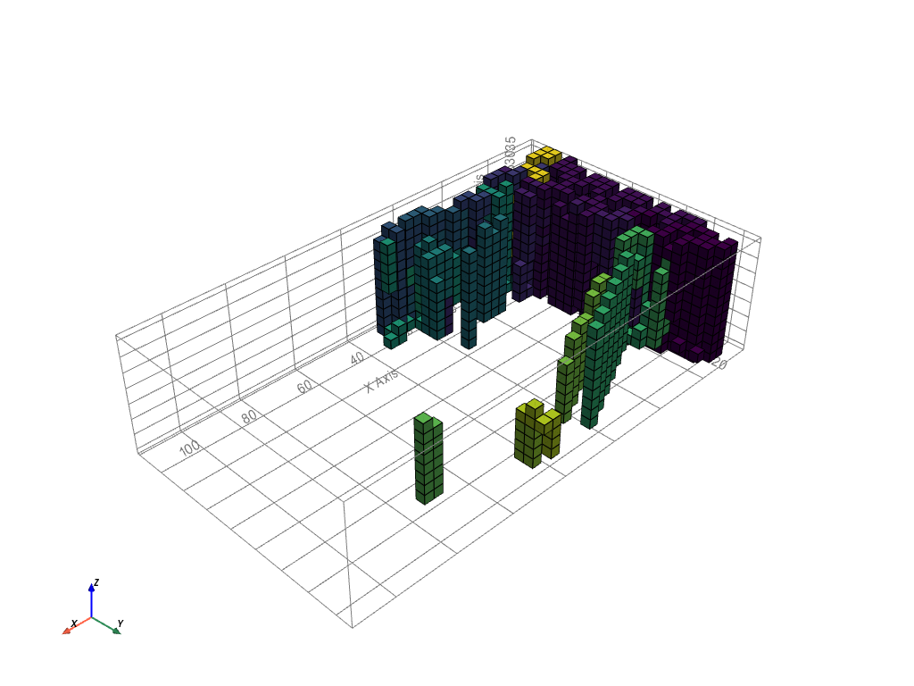
Mass variant, both functions on
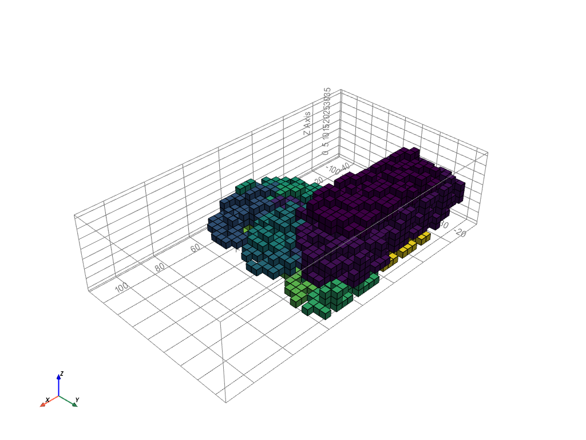
Final mass, float off, depth on
Centers of clusters
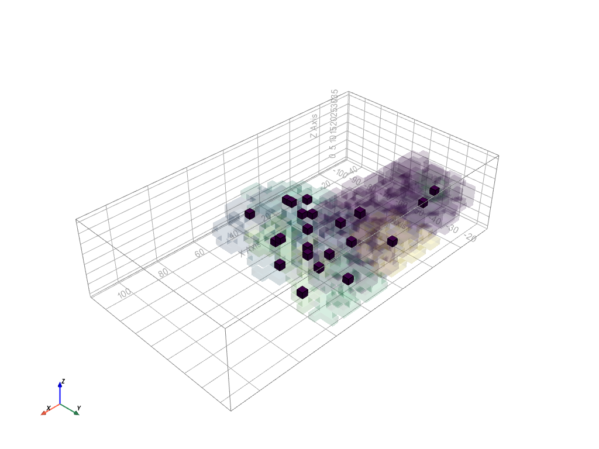
Centers of clusters
Pseudo code
Cluster_centers.py
Input : massing lattice
Find the different clusters in the grown ABM
Choose which voxel fits the best as centre of the agent cluster
Output : cluster centers
Shafts
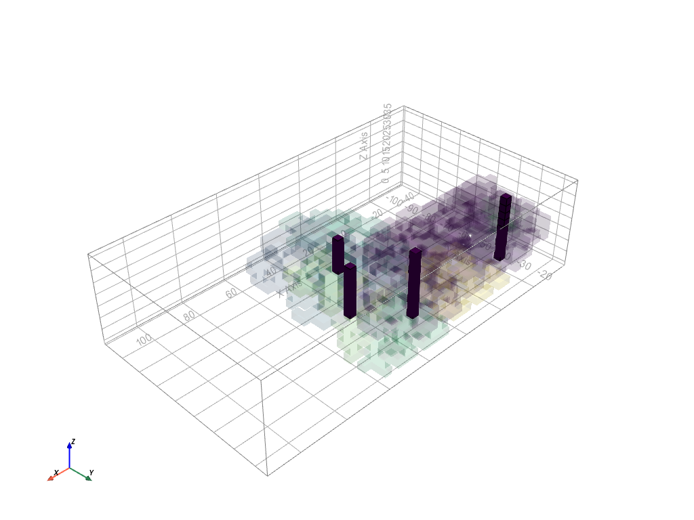
Shafts
Pseudo code
Shaft_forming.py
Input : cluster centers
Create 4 clusters from the chosen cluster centres
Choose which row of voxels fits the best as centre of the clusters
Output : shafts
Paths
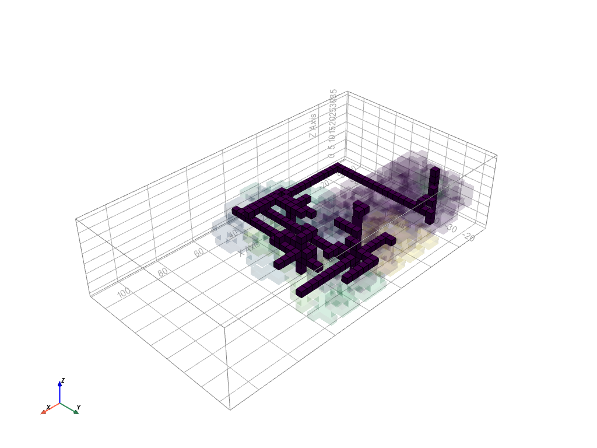
Paths
Pseudo code
Corridor_forming.py
Input : shafts , main entrance
For every cluster center
Find the shortest path to a shaft
For every shaft
Find the shortest path to the main entrance
Output : corridors
GIF growth example
An example of the growth of the fields, shown below is the student house.
Student house growth